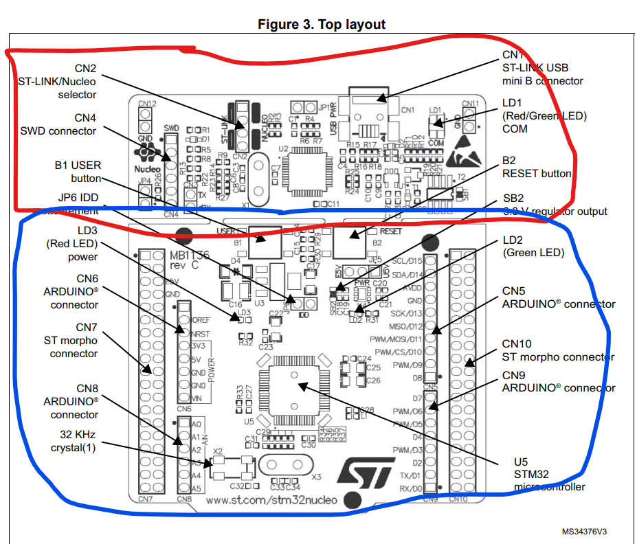
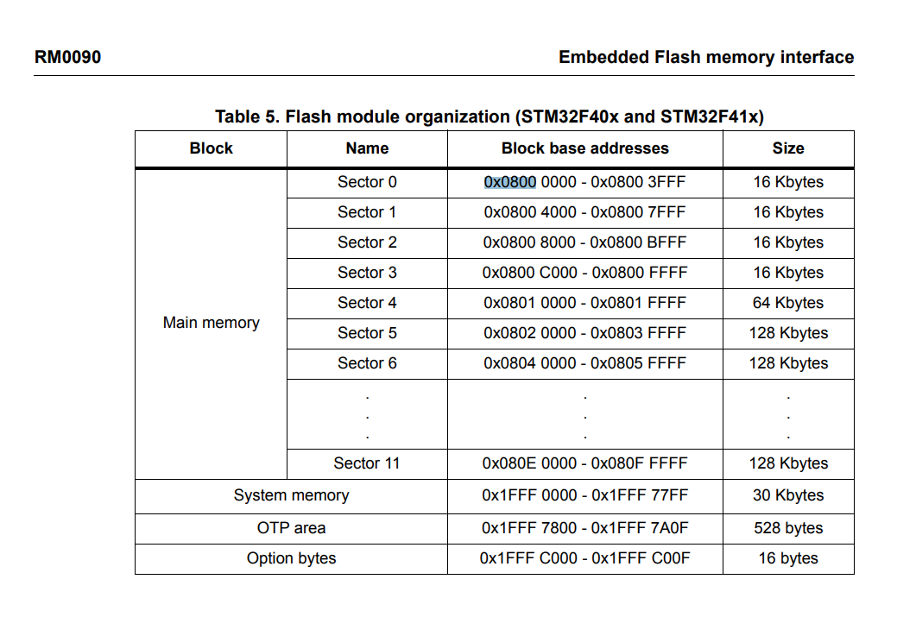
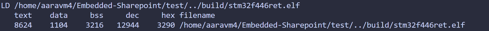

Flashing and Debugging on an MCU
This page will walk you through how you can flash your C code on an MCU using Embedded Sharepoint!
... and also debug it 🫠
ℹ️ Prerequisite : Make sure you've added Embedded Sharepoint.
Attaching USB devices in WSL
When you plug in your STM32 device, it won't automatically get recognized by your WSL
To attach a USB device on WSL you need to install usbipd-win.
- Install WinGet if you haven't already using these instructions
- Open your powershell in administrator mode
- Run
winget install --interactive --exact dorssel.usbipd-win
Once we have usbipd we can bind and attach USB devices.
- Open Powershell and "Run as Administrator".
- Run
usbipd listto get a list of all USB buses. - Locate the device called "ST-Link Debug" and note the "BUSID" (usually in the format of number-number ).
- Run
usbipd bind --busid <BUSID>. - Run
usbipd attach --wsl --busid <BUSID>(must have an instance of WSL running).
And you're good!
Confirm that your device is shared to WSL by running lsusb in your WSL terminal.
Attach USB devices using USBIPD extension
If you're using VSCode then you can use the USBIPD Connect extension to streamline the process.
Once the extension is installed you should see an Attach button at the bottom of your VSCode that when pressed will show you all USB devices. You can now press the ST-Link USB device to connect to it.
Note: The extension only works with ST-Links/Nucleos that you’ve previously connected. If you want to use a new device, you’ll need to go through the full manual usbipd setup first. Once a device has been connected manually, the extension can be used to reconnect it quickly in the future.
Hardware Interface
There are two main methods for programming the STM32 microcontrollers we use on our boards: Serial Wire Debug (SWD) and UART. SWD is available on any board with a 4-pin programming header. UART requires a USB-UART conversion chip, along with a USB-C port, which can be found on the PSOM and LSOM, for example.
SWD Setup
SWD is a two-wire protocol that is an alternative to JTAG. JTAG is the most common interface for debugging/accessing MCU registers, but it requires 4 pins to communicate while SWD only requires 2, so many ARM microcontrollers will use SWD to ease pin requirements.
To program the STM32 microcontroller with SWD, we use an ST-Link—a tool from STMicroelectronics that runs dedicated firmware designed to program STM32 devices.
If you take a look at your STM32 Nucleo you should notice two sections on the board:

ST-Link Connector
Your board may have the jumpers ON or OFF on the ST-Link Connector (CN2).
ON - you are programming the INTERNAL STM32 MCU (Nucleo)
OFF - you are programming the EXTERNAL STM32 MCU (Solar Board)
Decide whether you need jumpers based on which MCU you are trying to program.
ℹ️ If you're unsure, run
st-info --probeto see the MCU you're flashing to.
SWD Connector
When programming an external MCU (not on the Nucleo) the 6-pin SWD connector (CN4) on the ST-Link will be used.
Here's the pinout for reference
| Pin | CN4 | Designation |
|---|---|---|
| 1 | VDD_TARGET | VDD from application |
| 2 | SWCLK | SWD clock |
| 3 | GND | Ground |
| 4 | SWDIO | SWD data I/O |
| 5 | NRST | RESET of target STM32 |
| 6 | SWO | Reserved |
On our solar boards we have a SWD interface that looks like this


After connecting the corresponding pins you'll be able to program the MCU on your board.
UART Setup
UART is the simplest way to program our boards, only requiring a USB-C cable to connect to your laptop. However, while it does allow for flashing and serial monitoring using printf, it does not allow you to run OpenOCD and GDB to step through your code.
To connect to your board over UART, plug in a USB-C data cable to the board and your computer. Verify that the board powers up (LEDs turn on) and that you can see the USB-UART chip as a COM port in Device Manager (Windows) or using lsusb_mac/lsusb (MacOS/Linux). On WSL, use usbipd to bind and attach the board the same way you would for ST-Link.

When programming over UART, you'll have to use the Boot switch and Reset button on the board (PSOM shown below) to enter and exit the bootloader (special section of code that can erase/write to flash memory). When the Boot switch is set to USR, the MCU will start executing your flashed code whenever the Reset button is pressed. When the Boot switch is set to EXT, the MCU will enter the bootloader and wait for any of its peripherals to receive an erase/flash command. In this case, the command will come over UART from the USB-UART converter, but it can also come from CAN, SPI, or several other interfaces.

Software Tooling
Overview
The OpenOCD and stlink packages are some software tools we use to flash and debug code on our board. They are two different options for doing the same thing (flashing and debugging via JTAG/SWD).
-
stlink is a software package developed by STMicroelectronics to interface with an ST-LINK device for programming and debugging purposes.
-
OpenOCD runs a GDB server, which allows us to debug remote targets via GDB. It also lets us write to flash with some extra configuration.
We currently use the OpenOCD GDB server for debugging while using st-flash, a tool in the stlink package for flashing code.
Implementation
Embedded Sharepoint contains Makefiles to simplify the process of flashing code on an MCU. These Makefiles directly call the st-flash command.
On an STM32 MCU, flash memory starts at 0x8000000.

After the Makefile compiles your source code into a binary (.bin), it writes to flash using
st-flash write $(BUILD_DIR)/$(TARGET).bin 0x8000000
NOTE: We're not flashing the .elf file because it contains unnecessary debug symbols that we don't need to simply flash.
Make Executables
You can use the Makefile from the test/ directory to flash files within the tests/ directory.
-
Navigate to the
test/directory. -
If you've set the environment variables mentioned in "Adding Embedded Sharepoint" then you can run
make TEST=<testfile>wheretests/testfile.cis your test. -
After your code has been compiled and linked you should see information regarding the
.elffile created.

If you don't see a similar message nor a .elf file in the build/ directory, then look at your console output for a specific error traceback.
Flash
If you ran the previous section without error then you should have a .bin and a .elf in your build/ corresponding to your target MCU.
To flash with SWD:
- Navigate to
test/ - Run
make flash
Or alternatively with UART:
- Navigate to
test/ - Flip the boot switch to EXT & press reset
- Run
make flash-uart - Flip the boot switch to USR & press reset
... and you've flashed to the MCU!
Debug
GDB
To debug we'll use OpenOCD.
- Navigate to the root directory of Embedded Sharepoint.
- Run
openocd -f openocd-stm32f4x.cfgif you're programming an F4 MCU or the corresponding..l4x.cfgif you're programming an L4. - You should see a message that a GDB server was started on port
3333.
Open a second terminal session to use GDB
- Run
gdb-multiarch build/(TARGET).elf. If you aren't in root the filepath will look slightly different. On mac you need to doarm-none-eabi-gdbinstead of 'gdb' - Verify that GDB is using the debug symbols from the
.elffile. - Run
tar extended-remote :3333to connect to the OpenOCD GDB server.
Step through your code in GDB to analyze execution!
Serial Monitoring
Another debugging option is serial monitoring. The printf method is integrated into Embedded-Sharepoint.
-
The
HAL_UART_MspGPIOInit()function must be implemented with the proper GPIO initialization (RCC_CLK_ENABLE, GPIO struct filled in, HAL_GPIO_Init called). -
The
UART_HandleTypeDefstruct must be initialized with the proper settings before calling printf_init. -
Run
printf_init(UART_HandleTypeDef)with your desired UART to output to. For a Nucleo, this will be specified in the Nucleo user manual which you can find online. For one of our PCBs, check the schematic to see which UART peripheral your USB is connected to. -
printf_initmust be run after the RTOS is initialized. -
Run
printf(...)with your desired format!
To view the output, open up an application like PuTTY or picocom.
- For PuTTY, click Serial and enter your desired COM port. This should show up on your device manager (for Mac or Linux, run
lsusb). Set the baud rate to what you configured the UART for. Hit the big open button at the bottom. - For picocom, type in
picocom -b <baud-rate> <tty-name>and you should be set.